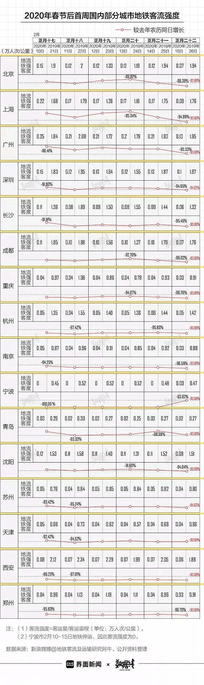

27城数据告诉你，复工第一周多少人在坐地铁
原文链接 备份链接 地铁北京南站，拍摄：蔡星卓 记者：唐俊 “ 绝大部分城市地铁客流不足去年同期10%。 ” 受疫情影响，今年春运没有返程高峰。从1月29日开始，全国铁路、民航、公路客流同比降幅一直超过80%。虽然政策已经允许复工，但实际 …
 文：孙煜 何苗 编辑：陈臣
文：孙煜 何苗 编辑：陈臣
“
一线城市中，北京上周拥堵指数较去年一季度水平下降最多，5个工作日拥堵指数的平均降幅为42.93%。
”
2月17日，《环球时报》题为《大多数城市不应再继续“静止”下去了》的评论称，“一个上千万人口的大城市因为每天很个别受到追踪的病例而让街道空荡荡的，对这种情况我们应当自嘲，并且打破之。”那么，复工首周各个城市出门的人到底多不多？
道路交通方面，界面数据记者选取了北京、上海、广州、深圳、天津、重庆、杭州、南京、成都、沈阳、长沙、西安、郑州、苏州、宁波、青岛等十六个城市，将2月10-15日百度智慧地图各城市的高峰拥堵指数，与2019年一季度各城市通勤高峰拥堵指数对比，来观察城市道路交通的拥堵程度。
一线城市中，北京上周拥堵指数较去年一季度水平下降最多，5个工作日拥堵指数的平均降幅为42.93%。深圳的降幅最小，5个工作日的拥堵指数较去年一季度平均下降31.97%。

其他十四个城市中，重庆的下降幅度最大。据百度地图数据，去年一季度重庆是全国最堵的城市，通勤高峰拥堵指数达2.251。上一周，重庆工作日的高峰拥堵指数则在1.03-1.04间浮动，5天平均降幅达54.15%。
和去年一季度相比，十四城中下降幅度最小的是宁波。宁波上周五个工作日平均降幅为22.39%。
在疫情防控期间，全国有多个城市实行了道路交通管制措施，停运道路公共交通（如杭州）或减少客运班次。与此同时，北京、天津等城市则暂停实行机动车尾号限行，以鼓励私家车出行。
城市轨道交通方面，界面数据记者根据公开资料，将上述十六个城市2月10-15日的地铁客流强度，与去年农历同日客流强度对比。结果显示，十六个城市平均客流强度降幅达93.69%。
四个一线城市的地铁客流强度降幅均在90%左右。深圳的地铁客流强度下降最大，正月十七至二十二日6天的地铁客流强度较去年同期下降了92.95%，北京的地铁客流强度降幅也超过90%，达92.87%。

四个一线城市外，界面数据记者统计的其他十四个城市上周的客流强度，平均降幅均超90%。西安的地铁客流强度下降幅度最大，上周客流强度较去年同期下降96.68%。降幅最小的青岛，地铁客流强度较去年同期也下降了91.51%。
和道路交通管制类似，在疫情防控期间，多个城市也出台了轨道交通管制措施。如宁波市自2月6日起暂停轨道交通运营，2月15日才逐步恢复运营。2月15日当天，宁波地铁客流强度较去年同期下降93.62%。上海、天津等多个城市在春节期间采取停运部分路段或关闭部分站点的方式限行。此外，北京、广州等城市也出台措施严控地铁满载率。
城市道路及轨道交通流量下降幅度大，背后有多种原因。一方面，许多城市出台隔离或封闭式管理政策，叠加交通限行措施，降低了城市居民的出行量。
另一方面，目前仍有大量流动人口尚未返回城市，城市人口总数较往年同期偏低。2月15日，交通运输部在国新办新闻发布会上透露，截至2月14日，节后（1月25日至2月14日）全国共发送旅客2.83亿人次、日均1348万人次，同比分别下降82.3%，仅为春运客流的六分之一。据预测，农民工到2月底将要返程约1.2亿人次，3月以后返程约1亿多人次，待返校的学生客运量约为1亿人次。
近日来，已有福建、海南、浙江、安徽、江西等多个省份出台“分级分区”的差异化防控政策。在疫情数据好转、防控更加精准的形势下，城市路上的人会越来越多。
未经授权 禁止转载

原文链接 备份链接 地铁北京南站，拍摄：蔡星卓 记者：唐俊 “ 绝大部分城市地铁客流不足去年同期10%。 ” 受疫情影响，今年春运没有返程高峰。从1月29日开始，全国铁路、民航、公路客流同比降幅一直超过80%。虽然政策已经允许复工，但实际 …
原文链接 备份链接 相比不少同行，我这次来武汉很迟，但一眨眼间，到这会儿，也有十几天了。 这些天来，不少在湖北之外的朋友，总是问我，现在的武汉到底怎么样了？ 如果说是医院，仅仅是在治疗的感染新冠肺炎的重症和危重症的病人，截至2月16日，武 …
原文链接 备份链接 2月14日 16:52 . . 2月14日 17:04 . . 中国长安 …
原文链接 备份链接 作者：匡达 “ 疫情尚未结束，但生活还得继续。 ” 目前，我国对新冠肺炎疫情的防控已进入关键时刻。据上海国际问题研究院14日发布的报告评估，全国疫情发展趋势继续企稳向好，整体疫情拐点的出现时间，将取决于中国目前采取的防 …
原文链接 备份链接 阻断新型冠状病毒引起的肺炎疫情的传播，公共交通工具的消毒防疫尤为重要。 记者 | 刘朝晖 今天，是春节后上海复工的第二周工作日的开始。从2月10日复工开始，已经有很多人重返工作岗位，同时返沪的人也越来越多，上海市内公共 …